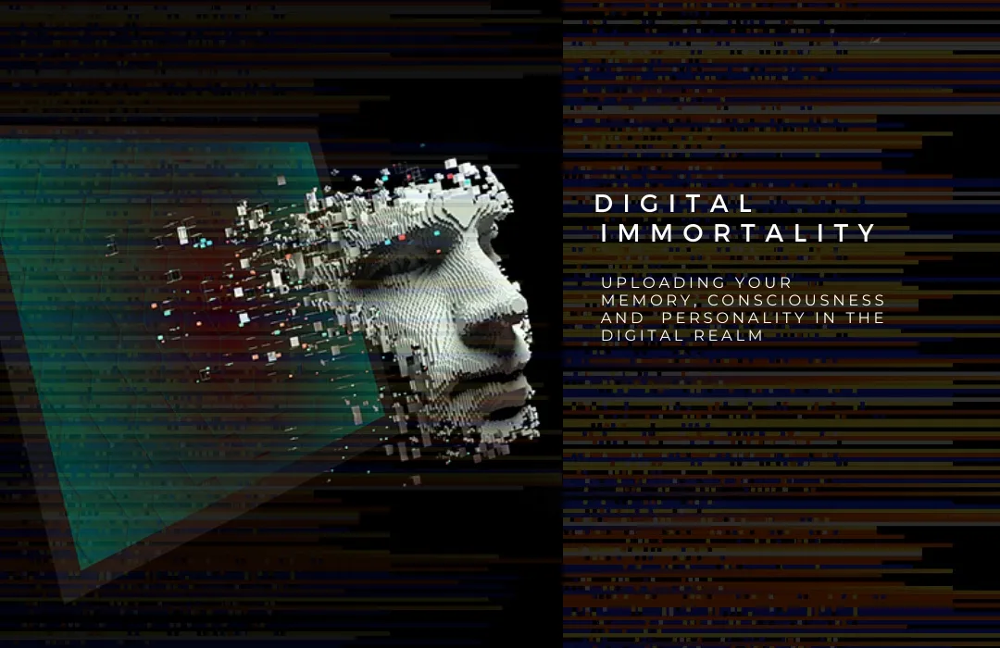

Concept: When Memories Become Interactive
What Is Digital Afterlife?
Imagine being able to see, hear, or even talk to someone you've lost—through a computer or screen. Digital afterlife is a new idea where technology helps keep memories of loved ones alive. Using things like artificial intelligence (AI), virtual reality (VR), or even chatbots, we can create digital versions of people who have passed away. These digital versions might look like them, sound like them, or say things based on what they used to share when they were alive. It's a new way to remember, stay connected, and keep their presence close—especially during times of grief.
Historical Background
- 2005: The Emergence of Digital Afterlife
Digital artist David Sullivan showcased a piece called "Ego Machine" in the "Hydriotaphia" exhibition, where he fused his own remains with a computer processor. The virtual avatar searched for mentions of his name on the internet, influencing how his image would appear. This was an early artistic exploration of the concept of digital legacy and immortality. - 2011: The Introduction of the 2045 Initiative
Russian entrepreneur Dmitry Itskov proposed the "2045 Initiative," which aimed to achieve digital immortality by transferring human consciousness into a non-biological carrier using brain-machine interfaces and robotics. - 2015: Creation of Roman Mazurenko Chatbot
Eugenia Kuyda developed a chatbot using her late friend Roman Mazurenko's text messages, allowing users to converse with an AI representation of him. - 2018: MIT Media Lab's "Augmented Immortality" Project
MIT Media Lab's Hossein Rahnama introduced the "Augmented Immortality" project, which aimed to collect personal data to create digital avatars, enabling people to continue existing in digital form after death. - 2019: Digital Domain's Virtual Human Technology
Digital Domain introduced Masquerade 2.0, a facial capture system used to create a digital likeness of the late football coach Vince Lombardi for a Super Bowl commercial. - 2020: Launch of Project December
Utilizing GPT-3, Project December enabled users to engage in text-based conversations with AI models simulating deceased individuals. - 2023: Launch of Eternos
Eternos is an AI-driven legacy platform that allows users to create their own digital avatars for loved ones to interact with after their passing. - 2023: The Combination of AI and Blockchain
The combination of AI and blockchain technology made it possible to create virtual replicas of deceased loved ones, such as holographic images made using deepfake technology or digital copies of personal belongings stored on the blockchain. - 2024: Calls for Ethical Oversight and Regulation
AI ethicists from the University of Cambridge called for urgent regulation of "deadbots" (digital recreations of deceased people), warning of potential psychological harm, especially to children.
Key Words & Meanings for Digital Afterlife
- Digital Afterlife: The use of technology to recreate or preserve a person's presence after they've died.
- AI Avatar: A computer-generated version of someone that looks and talks like them, often based on photos, videos, and voice recordings.
- Chatbot of the Deceased: A program that mimics the way a dead person would text or talk, using their past messages, posts, or written words.
- Voice Cloning: Technology that copies how someone's voice sounds so it can be used to "speak" new words after they've passed.
- Hologram: A 3D image that looks real and can show a person talking or moving, even after they've died.
- Digital Memorial: An online space (like a website or social media page) to remember and honor someone who has passed away.
- Virtual Reality (VR): A headset that lets you "enter" a digital world—sometimes used to meet virtual versions of lost loved ones.
- Posthumous AI: AI that continues to act or respond like a person after they've died, based on how they used to think, talk, and act.
- Memory Preservation: Using tech to save memories, stories, and images of someone so future generations can access them.
- Digital Consent: Making sure someone agrees (before they die) to have their voice, image, or data used in a digital way after death.